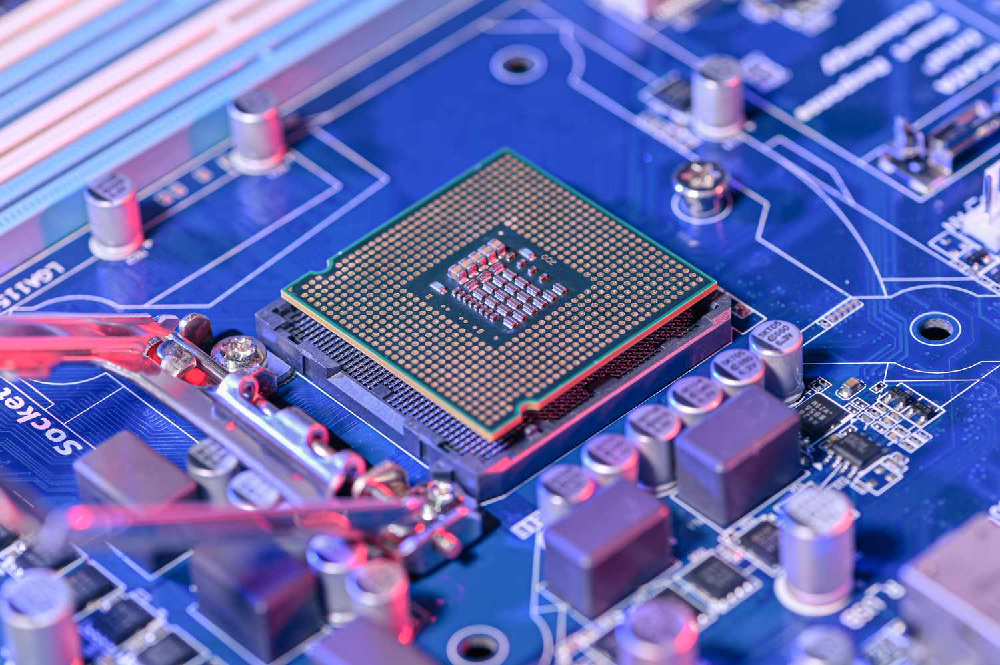
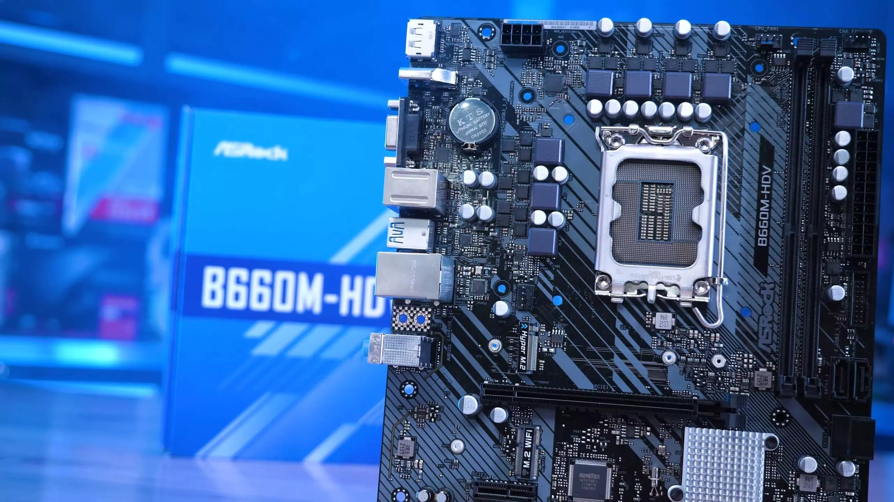
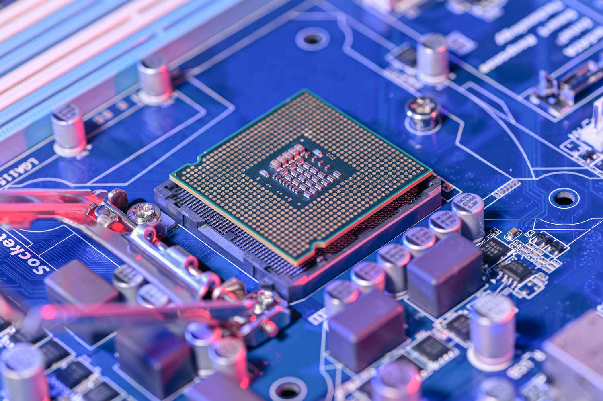
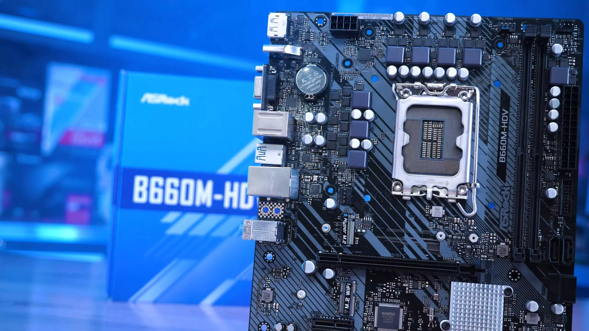

Key points
The Macbook has been a major player in the computer industry, competing with PCs for decades. It undergoes regular updates by Apple to maintain its appeal and functionality.
The history
Macbooks are sold through various online retailers like BestBuy and Amazon, with prices varying based on condition, specifications, and age. Introduced in 2006, they run on Apple's macOS, offering a unique computing experience.
First generation Macbooks
The original Macbook Pro debuted in January 2006 for $1,999, featuring a webcam, Apple Remote, and iWeb software. The sleek aluminum design of the Macbook Air was introduced in 2008, setting a new standard for laptops.


 


